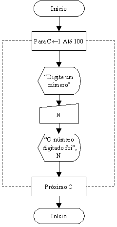

Exemplos Práticos de Construções de Lógicas e Fluxogramas
Exemplo 6: Construir um fluxograma para a leitura de cem valores digitados pelo usurário e que mostre cada um desses valores no vídeo.

Observe que o trecho a ser repetido fica entre o retângulo do "Para...Até..."e o retângulo do "Próximo".
Como Funciona Esta Lógica?
Observação Importante: Lembre-se que a variável N é uma posição de memória, e como tal, o valor atribuído a ela será apagado ao indicar-se um novo valor, por isto sempre que uma variável estiver em situação de receber um novo valor, devemos utilizá-lo antes da nova atribuição.